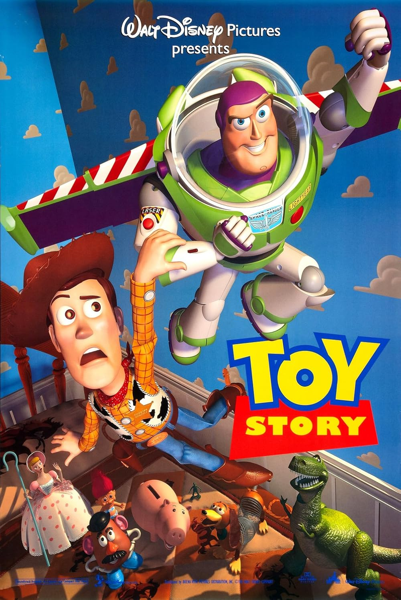

Fun Facts!
Grafika komputerowa to dziedzina, która łączy sztukę i technologię, pozwalając na tworzenie wizualnych treści przy użyciu komputerów...
Fun Facts – Ciekawostki o grafice komputerowej!
- Pierwszy film w pełni stworzony komputerowo: "Toy Story (1995)". 
- Najstarsza grafika komputerowa: Powstała w 1950 roku. (Bertie the Brain 1950)
- Piksele mogą być okrągłe!
- Photoshop początkowo nazywał się „Display”.
- Efekt „uncanny valley” sprawia, że postacie wyglądają niepokojąco realistycznie.